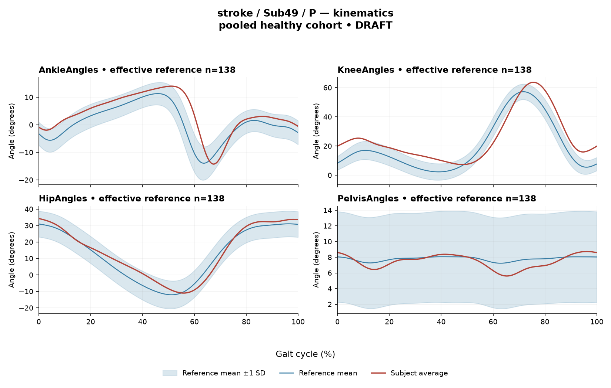

rater2 / Report 52 of 105 / Review spreadsheet row 53
RA857737CABCC0FB8
Case: stroke_Sub49_P
Read this report independently. Record judgments in the workbook. Browser pages do not save ratings.
Report: exact saved text
**1. Objective Findings**
* **Subject and Side:** Sub49_P; Stroke group, analyzing the paretic side. All seven requested muscles (GAS, RF, VL, BF, ST, TA, ERS) were recorded and available for analysis.
* **Gait Speed and Cadence:** Gait speed is 0.79 m/s, with a cadence of 97.8 steps/min. This speed falls into the limited community ambulator band; however, this label denotes a speed range only and does not measure walking independence or real-world safety.
* **Step Length Symmetry:** The step length symmetry index (successive-footfall definition) is -6.6%. The negative value indicates that the paretic-side step is shorter than the non-paretic-side step.
* **Kinematic Range of Motion (Sagittal Plane Only):** Ankle ROM is 28.3 degrees; Knee ROM is 56.4 degrees; Hip ROM is 45.3 degrees; Pelvis ROM is 3.1 degrees.
**2. EMG Envelope and Threshold Findings**
*Note: EMG findings describe averaged normalized envelopes evaluated against a 20% peak-amplitude threshold and a 3% cycle minimum duration. Amplitude values represent scaling relative to the envelope maximum across available strides, not muscular strength or force. Detected intervals represent average curve coverage and do not establish continuous contraction, physiological onset/offset times, or stride-to-stride variability. The gait cycle is defined from initial contact (0%) to successive initial contact (100%).*
* **Cycle Boundary and Continuous Coverage:** The RF and ERS muscles exhibited averaged envelopes that remained above threshold for 100% of the gait cycle, retaining coverage across the initial contact boundaries.
* **Intervals Wrapping the Cycle Boundary:** Several muscles demonstrated above-threshold intervals that wrapped across the 100% to 0% cycle-defining event. These included VL (89% to 31%, total cycle coverage 42%), BF (68% to 28%, total coverage 62%), ST (52% to 23%, total coverage 71%), and TA (64% to 31%, total coverage 67%).
* **Internal Intervals:** The GAS muscle demonstrated an above-threshold interval from 5% to 58% of the cycle, resulting in 53% overall coverage.
* **Normalized Amplitudes:** Peak normalized envelope amplitudes for the evaluated muscles were as follows: RF (0.72), VL (0.68), ERS (0.67), GAS (0.64), BF (0.62), ST (0.52), and TA (0.51).
* **Co-Contraction Indices (CCI):** CCI values reflect a whole-cycle overlap index of the continuous normalized envelopes.
* TA vs GAS: CCI was 0.43, which falls within the supplied healthy cohort median (0.39) and reference interval (0.24-0.59).
* RF vs BF: CCI was 0.77, which is above the healthy cohort median (0.68) but remains within the supplied reference interval (0.48-0.83).
* *Caution:* Being within these empirical healthy reference intervals does not physiologically establish normal co-activation or normal muscle function.
**3. Kinematic and Reference Comparisons**
*Note: Deviations are calculated against a pooled reference of 138 healthy controls. The healthy cohort's self-selected speed range is 0.80-1.79 m/s. Because this subject's gait speed (0.79 m/s) is below this floor, no speed-matched healthy reference exists in this dataset. Deviations inherently conflate slow-walking effects with stroke-specific control changes, and the two cannot be separated here. Deviations from an empirical reference do not by themselves establish a clinical diagnosis or disease effect.*
* **Composite Kinematic Score:** The overall composite kinematic deviation score (GPS-like, sagittal plane) is 5.33. For context, the healthy reference median is 5.1 (95th percentile 10.7).
* **Joint-Specific Gait Variable Scores (GVS):** The sagittal plane GVS values indicate the variance from the reference across the cycle: Knee (8.78), Ankle (4.68), Hip (3.77), and Pelvis (0.73).
* **EMG Maximum Absolute z-scores (Max |z|):** Max |z| denotes the single largest standardized difference between the subject's averaged envelope and the phase-specific healthy reference mean; it does not necessarily occur at the time of peak amplitude or a specific physiological event.
* ERS: max |z| of 4.7 (above the reference mean at 65% of the cycle).
* GAS: max |z| of 4.5 (above the reference mean at 56% of the cycle).
* RF: max |z| of 2.9 (above the reference mean at 22% of the cycle).
* BF: max |z| of 2.7 (above the reference mean at 17% of the cycle).
* ST: max |z| of 2.7 (above the reference mean at 12% of the cycle).
* TA: max |z| of 2.3 (below the reference mean at 62% of the cycle).
* VL: max |z| of 1.5 (below the reference mean at 99% of the cycle).
**4. Questions for Further Clinical Assessment**
* How much does the subject's slower gait speed (0.79 m/s) mechanically account for the observed sagittal plane kinematic variances (such as the knee GVS of 8.78), independent of primary stroke-related neuromotor impairment?
* Does the continuous 100% threshold coverage observed in the RF and ERS muscle envelopes correlate with clinical signs of increased resting tone, spasticity, or compensatory postural strategies during physical examination?
* Is the measured step length asymmetry (with the paretic step being shorter) clinically meaningful regarding the patient's dynamic balance, fall risk, and functional mobility goals?
* Are the observed sagittal plane ranges of motion at the ankle (28.3 degrees) and knee (56.4 degrees) sufficient to meet the specific functional demands and clearance needs of this patient, irrespective of the reference comparisons?Requirements for this report
Fill the corresponding Coverage rows in the workbook. G03 is included once. These are the approved requirements, not prefilled judgments.
| Excel row | ID | Required content | Components / optional content |
|---|---|---|---|
| 267 | R145 | Describe walking speed 0.79 m/s and that it is below the stated 0.80 m/s reference floor; no reference at this speed is supplied. | AND: displayed speed and that it lies below the 0.80 m/s reference floor, so no speed-supported healthy reference exists in this dataset. Optional: cadence, speed-band label (not a functional claim). One sentence may also serve the comparability half of G03. At 0.79 m/s the value is 0.01 below the floor; it must not be treated as inside the range. |
| 268 | R146 | Identify the knee as the principal sagittal GVS difference. Ankle and hip descriptions are optional. Exact GVS values are optional; identify the findings as reference-relative sagittal summary differences. | Required: knee as the principal difference. Optional: ankle, hip, pelvis. Exact values optional; no normality claim. |
| 269 | R147 | Describe EITHER ERS envelope above its phase-specific reference mean at approximately 65% of the analysis cycle (displayed max |z| 4.7) OR GAS envelope above its phase-specific reference mean at approximately 56% of the analysis cycle (displayed max |z| 4.5). One complete muscle-specific route is sufficient. Within each route, muscle identity AND mean-relative direction AND approximate cycle location are required. Exact max-|z| repetition is optional. | OR: one complete route suffices. Required for each route: muscle identity AND direction relative to the phase-specific reference mean AND approximate cycle location. Optional: exact max |z| value, comparison with the supplied endpoint span (descriptive only). Prohibited: percentile classification, gait phase, physiological onset, severity. |
| 270 | R150 | Describe the supplied successive-footfall step-length index -6.6% and its meaning: the paretic step is shorter. | AND: displayed index and the direction supported by its sign. Optional: formula, definition wording. Acceptable phrasing for small displayed values: "a small difference with the paretic step slightly shorter/longer" (not a cutoff). Prohibited: restating the index as a percentage shortening (E01), severity grades, whole-gait symmetry generalization (E07 issue, not an omission). |
| 271 | G03 | Express a meaningful limitation of reference comparability AND why the comparison cannot establish disease effects or clinical diagnosis; for controls it cannot establish disease or overall normality. One statement may also support a case requirement. | AND: comparability and inference limitations |
Exact model input: system instruction
Draft a research gait-report interpretation for a physical therapist or physiatrist using only the supplied quantitative summary. This is a limited-evidence interpretation task, not diagnosis or treatment selection. Rules: - Describe the participant's actual group and side, available findings, and missing channels accurately. Healthy-group membership does not prove normal physiology; deviations from an empirical reference do not by themselves establish disease. - Treat detected EMG intervals and coverage as properties of an averaged envelope under the stated threshold and duration rule. Do not convert them into physiological onset, offset, duration, continuous contraction, or inactivity outside the intervals. You may describe reported coverage, retained intervals and boundary continuity at the mean-envelope level. Do not infer the same pattern in every individual stride. Say no below-threshold segment only when the supplied evidence establishes that; a rounded coverage value or no retained interval alone does not establish it. - Individual toe-off and matched muscle-specific timing references are not supplied in this task. Use percentages of the analysis cycle. When the input explicitly identifies an initial-contact boundary, you may name that boundary or describe numerical proximity to it. Do not assign stance/swing, loading response, pre-swing, mid-stance or another event to a percentage, or substitute a conventional 60% split. Anatomical muscle actions may be named, but do not map an interval to a gait-phase function such as clearance, push-off or weight acceptance. Do not characterize timing as normal, early, delayed or prolonged without the required evidence. - Respect the supplied normalization method. Relative envelope amplitude is not strength or force, and average curves do not establish stride-to-stride variability. - Report CCI as a whole-cycle overlap index of normalized EMG envelopes. You may compare it with the supplied empirical interval or a supplied median, including proximity to an endpoint. Do not invent an unavailable median. Being within that interval does not establish physiologically normal co-activation or normal muscle function; being outside it does not establish pathological co-activation, stiffness, impaired control or a diagnosis. CCI is not simultaneous activation time, muscular force or a phase-specific result. It depends on normalization and envelope methods; do not transfer values or thresholds from other studies or algorithms. - Describe GVS and GPS-like as summary differences from the stated reference. Neither localizes waveform direction or phase; ROM alone does not establish a clinical restriction without an appropriate comparison. Do not treat pooled calibration percentiles as matched leave-one-out normal limits. - Where using a reference comparison, convey both limited comparability and the inability to establish a disease effect or clinical diagnosis from that comparison. One clear explanation per report is enough; age and speed need not be recited as separate checklist words. A speed inside an overall range does not prove that an appropriate matched reference exists. Apply these limits to controls as well. - The location of maximum |z| is the largest standardized difference from the reference, not necessarily the time of peak envelope amplitude or a gait event. Above/below reference in an EMG row means relative to the phase-specific reference mean at that location, not relative to a healthy percentile limit. - Preserve numerical direction and the displayed precision. Do not invent values, clinical severity grades, statistical significance, or unavailable reference values. Descriptive comparisons with supplied values remain allowed. Near-boundary rounded values do not justify classifying hidden unrounded values. - Clinical follow-up questions may ask whether a mechanism or measurement issue exists; do not presuppose it has already been observed. Do not recommend treatment. If EMG is unavailable, section 2 may simply state that envelope timing, amplitude and CCI cannot be assessed. Reference-only plots do not provide patient EMG. Use exactly these four sections: 1. Objective Findings 2. EMG Envelope and Threshold Findings 3. Kinematic and Reference Comparisons 4. Questions for Further Clinical Assessment
Exact model input: case summary
Candidate interpretation version: limited-evidence-v3.1-candidate
Draft the four-section report using only this subject's supplied evidence.
Metric definitions (read before interpreting any number below):
- All joint angles and ROM values are SAGITTAL PLANE only. Coronal/transverse data are not included.
- The released EMG curves are ensemble-averaged envelopes. For each participant and recorded muscle, normalization uses a shared maximum across the available strides before averaging; individual strides are not independently rescaled to their own peaks. This pipeline uses the released mean curves without further amplitude normalization. In the checked stroke release, the denominator is participant-, side-, and muscle-specific; it is not shared between sides. The local array audit verified 614 evaluable combinations, not all 700; 86 lacked valid nonzero paired samples. Amplitudes are relative envelope values, not absolute neural activation, force, or strength. Do not rank muscles as stronger or weaker from these amplitudes, or infer stride-to-stride variability from an average curve.
- Above-threshold intervals are the regions where the averaged envelope exceeds 20% of that curve's own peak, minimum retained interval 3% of the cycle (by sample count). An interval written as (X%-Y%) with X > Y wraps across the 100%->0% cycle boundary (envelope remains above threshold across the cycle-defining event). An onset of 0% is the analysis-window boundary, not necessarily a physiological onset. "No interval detected" means no region met the threshold + duration criteria; it does NOT mean the muscle is inactive or non-functional.
- CCI is the Falconer-Winter co-contraction index computed on the full continuous envelopes (2*common area / summed areas), so it can be non-zero even when the DETECTED burst intervals of the pair do not overlap (sub-threshold activity contributes).
- The composite kinematic deviation score is the RMS of the per-joint Gait Variable Scores over the sagittal channels provided ("GPS-like", not the validated 9-variable GPS).
- Step length symmetry index: 200*(paretic - non-paretic)/(paretic + non-paretic), in %. NEGATIVE means the paretic-side step is SHORTER. Two operational step-length definitions exist (successive-footfall: each heel's position at its own initial contact; instantaneous: both heels at the same instant) and give different values for some subjects -- the definition actually used is stated next to the symmetry value.
- "Max |z| deviation" is the LARGEST absolute z-score across all 1001 phase points of the cycle, comparing this curve to the healthy-cohort mean/SD at each phase. This is an extreme-value statistic, NOT a single-observation z-score: in this dataset every one of 109 healthy controls exceeds |z| = 2 on at least one muscle, and per-muscle healthy 95th percentiles for this statistic run 3.65 (ERS) to 4.61 (TA) -- higher still under leave-one-out. Do not label a value abnormal by the conventional 2-SD rule; use the healthy reference range given per muscle where provided.
- Healthy-cohort CCI reference (this dataset): RF-vs-BF median 0.68 (2.5th-97.5th pct 0.48-0.83); TA-vs-GAS median 0.39 (0.24-0.59). Composite score reference: median 5.1, 95th percentile 10.7.
- COHORT BACKGROUND (calibration context, not necessarily the exact reference used for this subject -- the actual reference composition is stated in a dedicated line with the subject data below): the full healthy cohort is 138 subjects for kinematics, effective n = 106-109 per muscle for EMG (29 controls have no usable EMG; completeness varies by age), pooling both body sides and all ages; it is not age- or speed-matched to this subject. A leave-one-out run uses one subject fewer than these counts.
- SPEED SUPPORT LIMIT (applies to most stroke subjects in this dataset): the healthy reference cohort's self-selected walking speeds span 0.80-1.79 m/s. If this subject's gait speed is below 0.80 m/s, NO speed-matched healthy reference exists in this dataset -- 41 of the 50 stroke subjects are below that floor. Deviations from the reference then conflate slow-walking effects with stroke-specific control changes, and the two cannot be separated from these data. Describe deviations from the reference as such; do not attribute them wholly to stroke pathology.
- Additional source fields are outside this input. Age, sex and gait events may be available in the release; time post-stroke, stroke clinical scores and a non-paretic-side designation apply only to the stroke cohort, as applicable. Do not claim every listed field exists for every participant. Distinguish not supplied, not applicable and documented absent recordings.
The released paretic-side cycle runs from initial contact of that limb at 0% to its next initial contact at 100%. The cycle boundary may be called initial contact; the endpoints are successive occurrences, not one instant. No intermediate event or phase boundary is supplied.
Model-visible information boundary: the summary contains mean-curve metrics and algorithm-detected intervals, not individual toe-off, matched normal muscle timing, stride-level variability, raw-signal quality checks, or expert plots. Information not supplied here must not be described as absent from the source dataset. Gait-cycle percentages alone do not identify gait phases.
Subject: Sub49_P (group: stroke, affected side: paretic)
Gait speed: 0.79 m/s (limited community ambulator (0.4-0.8 m/s)) [The ambulation label denotes a speed band only, not measured walking independence, safety or real-world community mobility.]
Cadence: 97.8 steps/min
Step length symmetry index: -6.6% (step-length definition: successive_footfall)
Composite kinematic deviation score (GPS-like): 5.33
Deviation reference actually used for this subject: 138 healthy subjects (pooled), 1001 phase points, source: main_cohort_excel.
EMG envelope findings:
- GAS: above-threshold interval(s) 5%-58%, 53% of cycle above threshold, peak normalized amplitude 0.64, max |z| vs healthy reference: 4.5 (above reference, at 56% of cycle)
- RF: above-threshold interval(s) 0%-100%, 100% of cycle above threshold, above threshold across cycle boundary, peak normalized amplitude 0.72, max |z| vs healthy reference: 2.9 (above reference, at 22% of cycle)
- VL: above-threshold interval(s) 89%-31% (wraps cycle boundary), 42% of cycle above threshold, above threshold across cycle boundary, peak normalized amplitude 0.68, max |z| vs healthy reference: 1.5 (below reference, at 99% of cycle)
- BF: above-threshold interval(s) 68%-28% (wraps cycle boundary), 62% of cycle above threshold, above threshold across cycle boundary, peak normalized amplitude 0.62, max |z| vs healthy reference: 2.7 (above reference, at 17% of cycle)
- ST: above-threshold interval(s) 52%-23% (wraps cycle boundary), 71% of cycle above threshold, above threshold across cycle boundary, peak normalized amplitude 0.52, max |z| vs healthy reference: 2.7 (above reference, at 12% of cycle)
- TA: above-threshold interval(s) 64%-31% (wraps cycle boundary), 67% of cycle above threshold, above threshold across cycle boundary, peak normalized amplitude 0.51, max |z| vs healthy reference: 2.3 (below reference, at 62% of cycle)
- ERS: above-threshold interval(s) 0%-100%, 100% of cycle above threshold, above threshold across cycle boundary, peak normalized amplitude 0.67, max |z| vs healthy reference: 4.7 (above reference, at 65% of cycle)
Co-contraction indices:
- TA_vs_GAS: CCI = 0.43
- RF_vs_BF: CCI = 0.77
Joint kinematic findings (sagittal plane):
- AnkleAngles: range of motion 28.3 deg, Gait Variable Score 4.68
- KneeAngles: range of motion 56.4 deg, Gait Variable Score 8.78
- HipAngles: range of motion 45.3 deg, Gait Variable Score 3.77
- PelvisAngles: range of motion 3.1 deg, Gait Variable Score 0.73Reference context for expert review
# Reference context: stroke/Sub49_P Mean/SD reference: 138 controls; method pooled; exclusions: []. Effective reference counts: GAS=109, RF=108, VL=109, BF=106, ST=108, TA=107, ERS=106, AnkleAngles=138, KneeAngles=138, HipAngles=138, PelvisAngles=138. The exact system and user input files define what the model receives. The EMG and kinematic plots are supplementary expert evidence, not model inputs. The plotted mean plus/minus one SD is descriptive, not a clinical normal band. Negative lower EMG bands can result from mean minus SD; they do not imply negative recorded EMG. The max-|z| p95 span in the input is pooled calibration context. Complete muscle-specific LOO thresholds are not supplied; an appropriately indeterminate classification is allowed. Controls are excluded from their own mean/SD reference, but cohort-level calibration has prior reference-data reuse. It is not an independent matched clinical limit. GPS-like is a four-channel sagittal composite, not the validated nine-variable GPS. The pooled median/p95 background is not a matched LOO normality boundary. CCI uses continuous normalized envelopes over the whole analysis cycle. An empirical interval comparison does not establish normal muscle function. Threshold intervals and rounded coverage describe the averaged envelope. Rounded 100% coverage and one interval do not prove absence of short below-threshold gaps. Use the group-specific cycle and normalization provenance in the actual input. No individual intermediate gait events or matched normal muscle timing are supplied. Administrative age and published bilateral speed are not added to this input. Expert-visible plots do not justify requiring unseen direction, phase or morphology. For a new-case requirement, cite exact input evidence. Select clinically useful descriptive content without inferring a diagnosis or severity from rank alone.
EMG and kinematic curves
The curves are supplementary expert evidence. Only the saved text inputs were supplied to the model; do not require curve-only observations.
EMG

Kinematics
